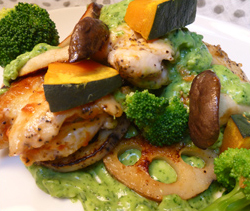

鶏肉と秋野菜の
グリーンクリームソース
グリーンクリームソース
- 調理時間：40 分
- （一人当たり）
- カロリー：697kcal
- たんぱく質：33.2g
- 脂質：45.1g
- 塩分：2.4g


＜２人分＞
- 鶏肉（もも肉）
- １枚
- エリンギ
- １本
- レンコン
- ８０ｇ
- カボチャ
- １００ｇ
- ブロッコリー
- ８０ｇ
- サラダ油
- 少々
- 塩、コショウ
- 少々
- チーズ
- ３０ｇ
- 小麦粉
- 適量
【トマトソース】
- ・トマト
- １個
- ・オリーブオイル
- 少々
- ・塩、コショウ
- 少々
- 【グリーンクリームソース】
- ・小麦粉
- １５ｇ
- ・バター
- １０ｇ
- ・牛乳
- ２００ｃｃ
- ・塩、コショウ
- 少々
- ・小松菜
- ３０ｇくらい


-
【トマトソースをつくる】
ざく切りにしたトマトをお鍋にいれて形が無くなるまで煮込み、塩とコショウで味をととのえる。仕上げにオリーブオイルを加える。 -
【グリーンクリームソースをつくる】
1.フライパンにバターを入れて火にかけ、ふるった小麦粉を加えて炒める。牛乳を加えてホワイトソースを作り、ここに小松菜ペーストを加える。
2.塩、コショウで味をととのえる。
※小松菜ペーストは、小松菜を茹でて、みじん切りにし、すり鉢でペースト状になるまで摺る。又はミキサーにかけるとよい。 - レンコンは薄い輪切りにして酢水にさらす。カボチャは一口大に切る。エリンギ、ブロッコリーは食べやすい大きさに切る。
- ブロッコリーは硬めに塩ゆでする。
- 鶏肉は１枚のもも肉を6等分する。軽く塩、コショウ（分量外）して、厚み半分に切り目をいれ、①のトマトソースとチーズをはさんで、全体に小麦粉を振って、フライパンで、両面を色よく焼く。
- 鶏肉を取りだし、レンコン、カボチャ、エリンギを炒め、塩、コショウをふる。
- 皿に鶏肉、レンコン、カボチャ、エリンギ、ゆがいたブロッコリーを盛り付け、グリーンクリームソースをかける。
鶏肉と秋野菜のグリーンクリームソース
ふだん何気なくいただいている肉料理ですが、これは私たちの体に重要なたんぱく源です。たんぱく質は私たちの体を構成している大切な栄養素で、筋肉だけでなく、心臓や肝臓などの臓器はもちろん、酵素やＤＮＡなどの遺伝情報物質までも構成しています。
今回のレシピは、鶏もも肉を使用しました。同じ鶏肉でも部位によって栄養素が少し異なります。もも肉は鶏が歩いたり走ったりしてよく動かす部分なので赤く、鉄を含むたんぱく質が含まれます。鉄分は単独で摂取すると吸収率が低いのですが、鶏肉に含まれる鉄分はたんぱく質と結合しているので吸収がよいといわれています。
貧血は血行が悪くなり冷えの症状も引き起こします。冷え症対策や冬の体力づくりにも良質のたんぱく質がおすすめです。